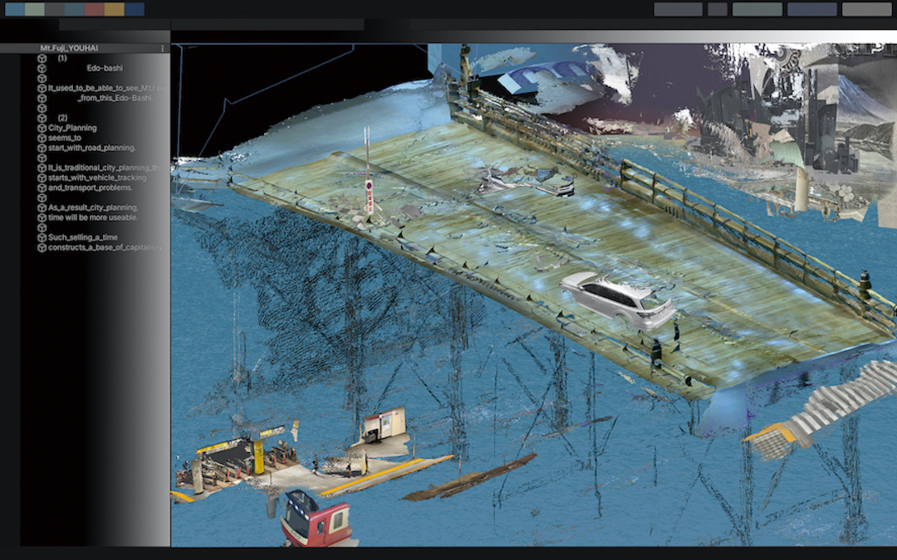

松井 靖果
桐山孝司研究室
女子美術大学短期大学部 卒業
1992年茨城県生まれ。
映像メディアによるインスタレーション作品を展開。作者内にある断片的な記憶や出来事を顕在化する。今作では、加工された作家本人の肉声や環境音の不協和音によって、鑑賞者の心を揺るがす。
https://mtiszks.myportfolio.com/top
展示歴
2016
「茨城県北芸術祭」 (日立市)
2020
買える！コレクター展「Collectors’ Collective Vol.3」(MEDEL GALLERY SHU)
受賞歴
2012 第18回学生CGコンテスト ノミネート
2013 女子美スタイル展 住友文彦賞 受賞
2013 第19回学生CGコンテスト ノミネート
2014 シェル美術賞 入選

The Map, Fusing Nostalgia (2016)

yohai

バースの肉屋 (2014)